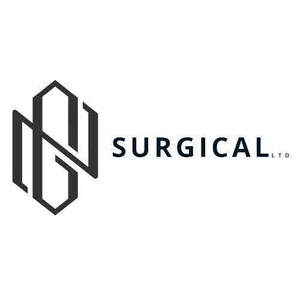

Trade Mark Journal No.2025/011 14 March 2025
UK00004156607 6 February 2025 (10)

- Class 10
- Dental instruments; Surgical instruments; Surgical apparatus and instruments for dental use; Surgical instruments for use in orthopedic surgery; Plates in the nature of orthopaedic surgical instruments; Prosthetic instruments for dental purposes; Orthodontic instruments; Dental apparatus and instruments; Instruments for use in the fitting of dental protheses; Lamps for use with dental instruments; Surgical devices and instruments; Surgical instruments for use in spinal surgery; Medical instruments; Ultrasonic diagnostic instruments for dental use; Surgical cutting instruments; Surgical apparatus and instruments for medical use; Surgical apparatus and instruments for veterinary use; Shears [surgical instruments]; Surgical apparatus and instruments; Surgical instruments and apparatus; Lag screws in the nature of orthopaedic surgical instruments; Compressing screws in the nature of orthopaedic surgical instruments; Ultrasonic diagnostic instruments for surgical use; Optical instruments for medical endoscopy; Medical and surgical laparoscopes; Medical therapy instruments; Retractors [medical instruments]; Ultrasonic cleaning instruments for surgical use; Orthopaedic instruments; Dental equipment; Medical diagnostic instruments; Optometric instruments; Plates in the nature of orthopaedic surgical implants; Medical instruments for percutaneous tracheostomy; Pipetting instruments for surgical use; Ophthalmological instruments; Dental tools; Medical and veterinary apparatus and instruments; Surgical masks; Electro medical instruments; Ophthalmic instruments; Ultrasonic cleaning instruments for medical use; Hammers for medical or surgical use; Instruments for use in gastrointestinal surgery; Filling instruments for dental purposes; Forceps for dental technical purposes; Trays for holding surgical instruments; Ultrasonic diagnostic instruments for medical use; Urological instruments; Radiotherapy instruments for medical use; Instruments for use in medical analysis; Medical analysis instruments; Medical hearing instruments; Gynaecological instruments; Cases fitted for surgical instruments; Ultrasonic diagnostic instruments for veterinary use; Medical apparatus and instruments; Diagnostic instruments for medical use.
G.N SURGICAL LTD